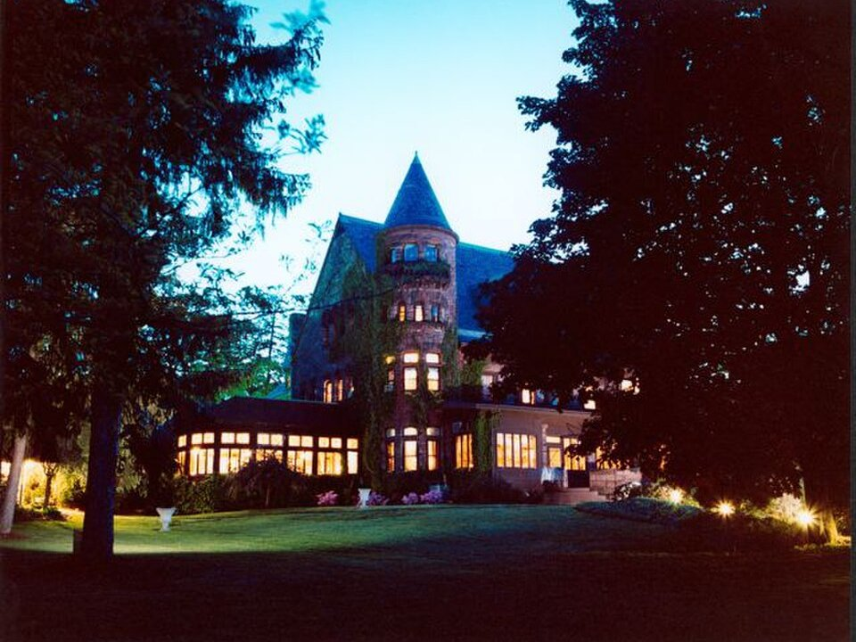

Seneca Lake · Castle hotel
Belhurst Castle
An 1880s stone castle on the lake, with rooms in the castle, the Vinifera Inn and White Springs Manor, plus a winery and spa.
Official details for Belhurst CastleA castle on the lake and Riesling country.
Seneca Lake is the deepest of the Finger Lakes and the center of New York wine, with more than 30 wineries along its slopes, many making world-class Riesling. Land at Finger Lakes Regional in Seneca Falls, stay at Belhurst Castle, an 1880s stone castle on the lake with its own winery and spa, taste along the Seneca Lake Wine Trail, have dinner at F.L.X. Table in Geneva, hike the waterfalls of Watkins Glen and visit the Women’s Rights National Historical Park in Seneca Falls.

Time illustration: direct distance at 150 KTAS plus 15 minutes for departure and arrival, matching the discovery page. Use ForeFlight for your actual flight plan.
Check the weekend weather at both ends → Flight category, your minimums and the crosswind on the best runway.
More in Aviation & getting around below. Crew cars change often: call the FBO before you go. How to have a rental car waiting at the FBO · Know something we missed? Tell us.
0G7, Finger Lakes Regional, is a non-towered county airport at 492 feet with a 4,592-foot paved runway in Seneca Falls, about 15 minutes from Belhurst Castle and Geneva.
Finger Lakes Regional Airport, Seneca Falls, NY
The county runs the FBO with 100LL and Jet A. A short turf crosswind runway is also available. Arrange a rental car or a winery tour ahead. No live fuel price is shown.
Upstate New York flying: lake-effect snow and low ceilings from November to March, summer thunderstorms, morning valley fog, and icing in the cold months. About 560 nm from Myrtle Beach: plan a fuel stop and three nights.
Rates and availability need travel dates. Fall harvest weekends book early.
An 1880s stone castle on the lake, with rooms in the castle, the Vinifera Inn and White Springs Manor, plus a winery and spa.
Official details for Belhurst CastleA 1910 Italian Renaissance villa with gardens on the lakeshore.
Official details for Geneva On The LakeRooms with lake views at a winery on the west shore.
Official details for The Inn at Glenora Wine CellarsA hotel on the harbor at the south end of the lake.
Official details for Watkins Glen Harbor HotelInns and B&Bs in the Finger Lakes.
Finger Lakes Tourism for More places to stayPrices and availability for your dates, through our partner Stay22. This is an affiliate link: we may earn a commission at no cost to you. The picks above are never paid.
Reserve weekend dinners.
Dinner in the castle’s original rooms; the Stonecutter’s Tavern is the casual option.
Official details for Edgar’s at BelhurstA small, set-menu dinner from a master sommelier in Geneva.
Official details for F.L.X. TableA winery bistro with lake views on the east shore.
Official details for Red Newt CellarsSeasonal food in downtown Geneva.
Official details for Kindred FareRestaurants around Seneca Lake.
Finger Lakes Tourism for More restaurantsMany tasting rooms take reservations on fall weekends.
A gorge trail past 19 waterfalls at the south end of the lake.
New York State ParksSite of the 1848 Seneca Falls Convention.
National Park ServiceThis prototype links to the local visitor site. It does not yet match events to your travel dates.
Crush season and fall color on the lake.
Finger Lakes Tourism for HarvestLake days and outdoor tastings.
Finger Lakes Tourism for SummerWatkins Glen’s gorge trail is open.
New York State Parks for Gorge trail seasonCheck the local calendar when choosing a weekend, and confirm dates and tickets with the organizer.
A sample Seneca Lake weekend. Plan three nights for the flight. No bookings or availability confirmed.
Land at 0G7 mid-morning.
Lunch and a tasting at Belhurst Castle.
A short walk, then back to the airport.
Land at 0G7, subject to weather and your actual flight plan.
Check in at Belhurst and taste at its winery.
Dinner at Edgar’s.
Wine trail: Wiemer, Fox Run and Ravines.
Lunch at Red Newt, then Watkins Glen.
Dinner at F.L.X. Table.
Women’s Rights National Historical Park.
Allow time at the FBO before departure.
Afternoon thunderstorms are common in summer; leave in the morning.
Seneca Lake wine trail.
Explore.
Dinner in town.
This guide is part of a multi-stop flying trip. Set your dates and aircraft, then swap stops to make it your own.
These details make the difference between an appealing list and a usable getaway.
Belhurst, F.L.X. Table, then a wine tour or car.
About 560 nm from Myrtle Beach: plan a fuel stop.
Book a driver if you plan to taste.
May to October.
Picks and links reviewed by WingAway Weekends. Hours, prices, menus and availability change often, so confirm directly with each place before booking. Spotted something out of date, or have a favorite we missed? Email us at hello@wingawayweekends.com.
WingAway Weekends helps you discover the destination. Use ForeFlight and current official aviation information for route, performance, weather, NOTAMs and preflight decisions. Flight planning and PIC responsibility stay with the pilot.